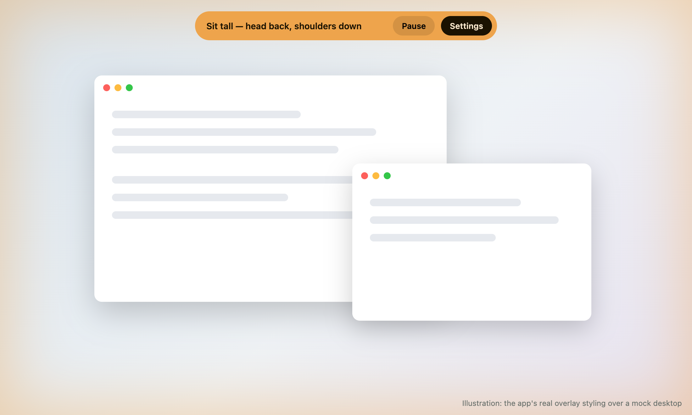
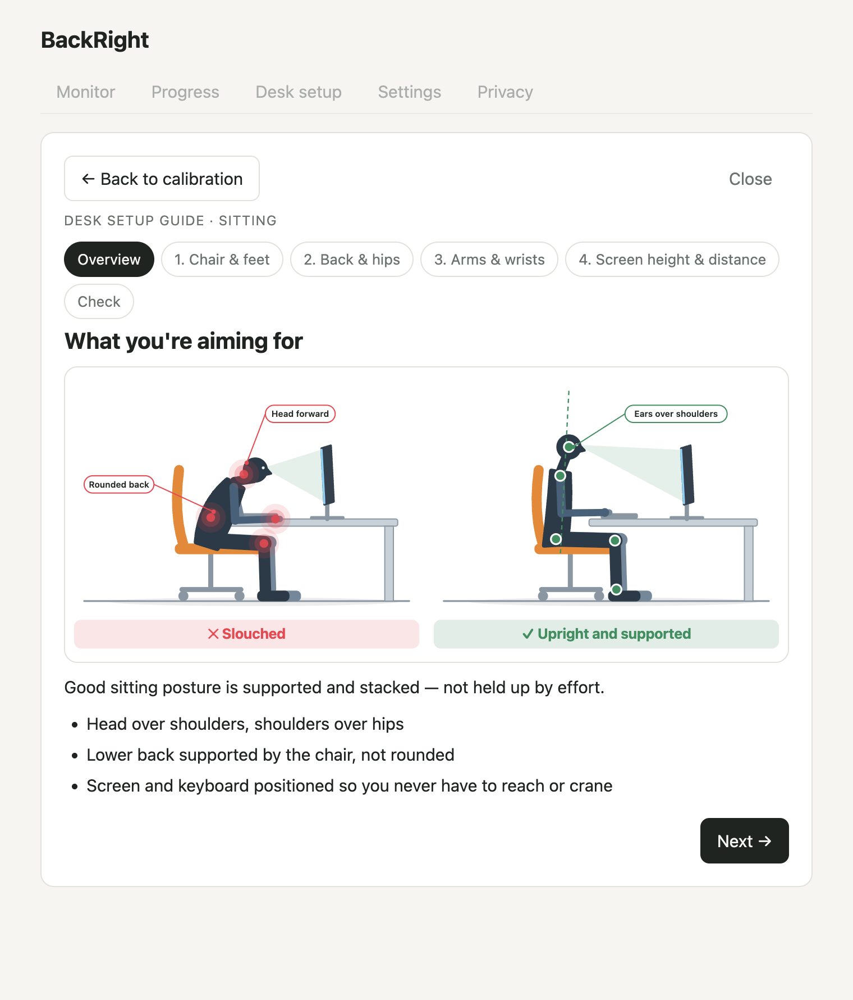
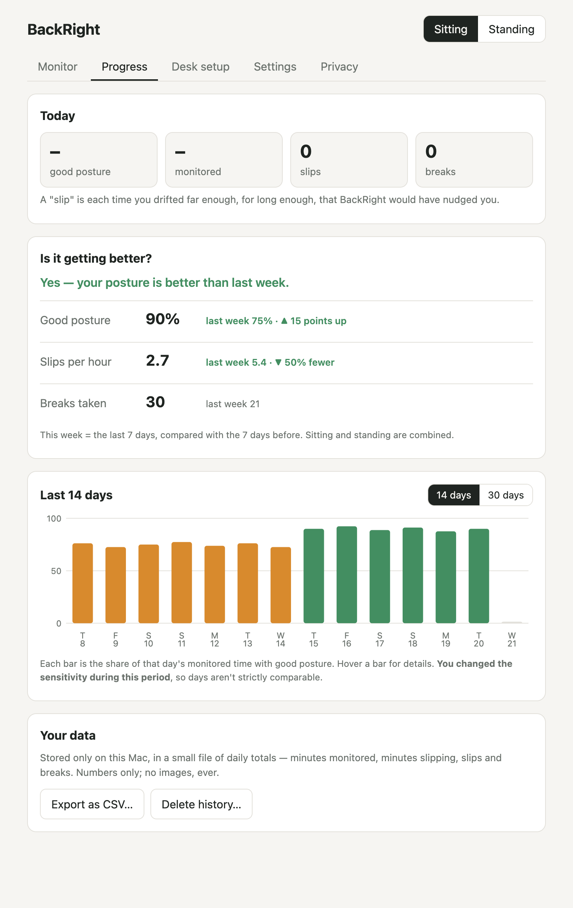
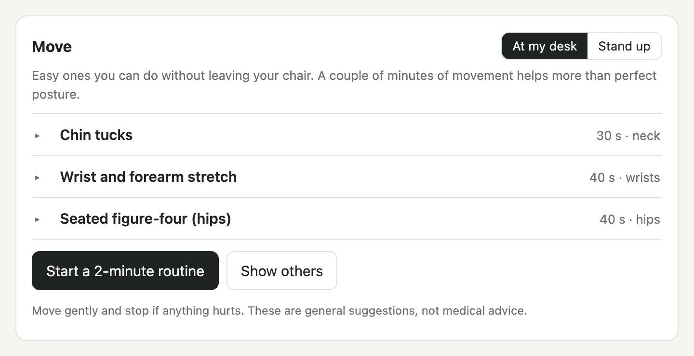

A gentle nudge when your posture slips
BackRight watches your posture through your webcam and tells you with a soft glow around your screen. Your video never leaves your Mac: it isn't saved or sent anywhere.
Latest version · macOS 13 or newer · Not sure which? Apple menu → About This Mac. · Install steps

Calibrate once, then forget about it
Nothing to learn and nothing that pops up in your way.
Show it good posture
Hold the way you want to sit or stand for a few seconds. That's your baseline. Works sitting, standing, or both, with a separate calibration for each, for sit-stand desks.
Work as normal
If your head drops forward, you lean in, or your shoulders go uneven for a few seconds, a soft glow appears around every screen. It fades when you correct.
Move a little
Every 30 minutes a quiet reminder offers a quick stretch, at your desk or standing up. Snooze or skip any time.
Everything in one small window
A desk-setup guide, easy stretches, and a way to see whether things are getting better.



Private by design
A posture app that watches you through a camera should earn your trust. Here's how it does.
- ✓Analysed on your Mac, never uploaded.A small pose model runs inside the app. There's no account and no server.
- ✓Never saved.Each camera frame is checked in memory and thrown away. Only small numbers are kept, like how long you sat well today, so you can see your progress. You can export or delete them any time.
- ✓Works with no internet.The app blocks every outside connection. Don't take our word for it: the first-run walkthrough has a live counter you can watch while you turn Wi-Fi off.
- ✓Open source, with tests.All the code is public under the MIT licence, and automated tests fail if it ever starts saving images or using the network.
Get BackRight
Free. macOS 13 or newer, Apple Silicon or Intel.
Download
Pick the right installer above (or on the releases page), then:
- Open the .dmg and drag BackRight to Applications.
- Open BackRight. macOS says it can't verify the app: click Done (not "Move to Trash").
- Go to System Settings → Privacy & Security, scroll to Security and click Open Anyway. Enter your password.
- Allow camera access when asked.
That warning appears because BackRight isn't signed with a paid Apple developer account yet. There's a text file with these steps inside the download.
Homebrew
If you already use it:
brew tap lylerbaumgarten/tap brew trust lylerbaumgarten/tap brew install --cask backright
Homebrew checks the download's checksum, then the cask clears macOS's download flag so you skip "Open Anyway". What that means.
Questions
Is it a medical device?
No. BackRight is an ergonomics reminder, not medical advice. If you have pain, please see a professional.
Does it slow my Mac down?
It checks your posture a couple of times a second, not at full video rate. On a 2019 Intel MacBook Pro it used about 15–20% of one core while monitoring, and you can lower how often it checks in Settings.
What does it need from my camera?
A webcam that can see your head and shoulders, and reasonable lighting. It works best with one person in frame. It can't see your lower body, so knee and hip checks in the desk guide are best-effort.
Windows or Linux?
Not yet. The code is cross-platform, but only Mac builds are published and tested.
What's stored on my computer?
Your settings and calibration numbers, plus a small history of daily totals (minutes monitored, minutes slipping, slips, breaks). Numbers only, never images. You can export the history as CSV or delete it from the Progress tab.